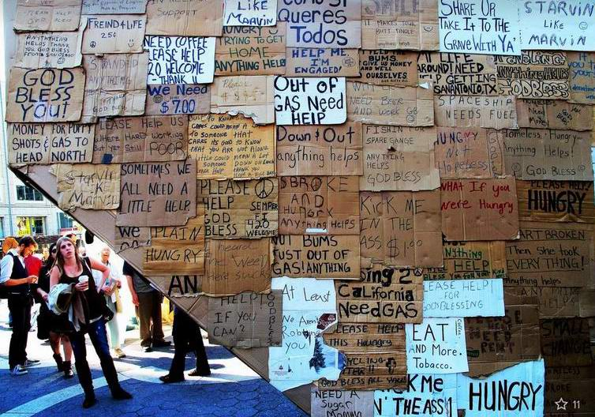
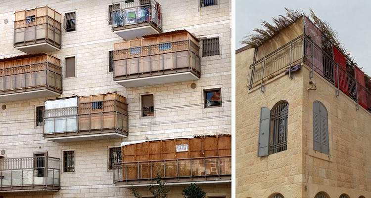
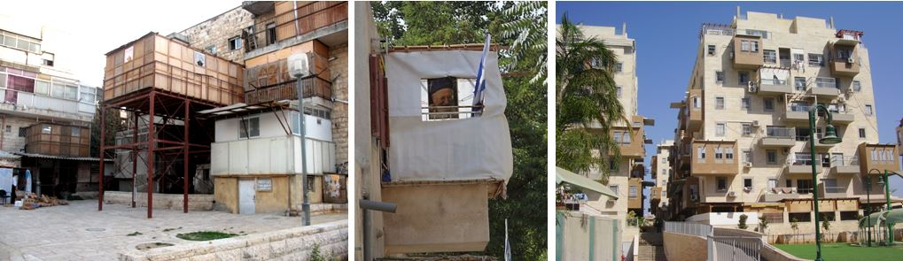
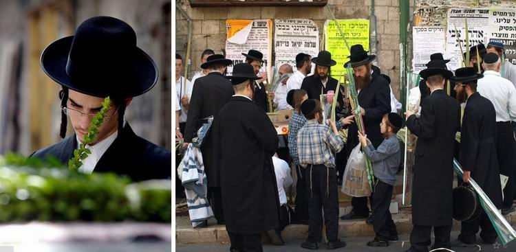
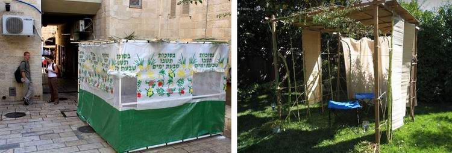

The Sukkah and the Wild Olive. Building a Sukkah as Written
What is the prophetic meaning of the fact that, as it is written, the sukkah must be built in this way? The leaves of different trees, some beautiful, some mighty, some fragrant, some bearing wonderful fruit: all these are different peoples before the Most High.
Are you sure your sukkah is "as written"?

We are celebrating the Feast of Sukkot (the Feast of Tabernacles), the feast of remembering how our fathers, delivered by the Most High from slavery in Egypt, once lived in tents in the wilderness of Sinai.
It is a feast of great joy and gladness, when in Israel people keep the commandment of the Torah to build sukkot and live in them for seven days.
Photos of our sukkah and how we built it can be seen here.
Of course it looks unusual. After all, the standard of living has risen considerably since the wilderness. But while we build and stay in these booths, the Almighty does something in our hearts. He moves us to remember His glory revealed to our fathers, to reflect on His commandments and… to ask questions, again, as it is written…
"And ye shall take you on the first day the fruit of goodly trees (literally: fruit of a beautiful, or citrus, tree), branches of palm trees (literally: fronds of the date palm), and the boughs of thick (broad-leaved) trees, and willows of the brook; and ye shall rejoice before the LORD your God seven days."
Lev. 23:40
פְּרִי עֵץ הָדָר כַּפֹּת תְּמָרִים וַעֲנַף עֵץ־עָבֹת וְעַרְבֵי־נָחַל
PRI ETS HADAR, KAPOT TMARIM, VA-ANAF ETS-AVOT, VE-ARVEI-NACHAL
By tradition, the four species from Moshe's list (ARBA'AT HA-MINIM, also called the LULAV) are used for special prayers with waving (NETILAT LULAV) and for dances. In building the sukkah only palm branches are used.
Looking at the sukkah I had built with my own hands, I asked myself how far it matches what is written about it in the Torah.

Moshe does not say much about this: how exactly to build a sukkah, and what these arba'at ha-minim have to do with it.
The book of Nehemiah comes to our help. He refers to what the Most High commanded through Moshe (Lev. 23:40), but the details in Moshe and in Nehemiah differ somewhat. Nehemiah gives a fuller list of the kinds of trees with which to celebrate. And he makes clear that the branches of these trees are to be used for building the booths.
14 And they found written in the law which the LORD had commanded by Moses, that the children of Israel should dwell in booths in the feast of the seventh month: 15 and that they should publish and proclaim in all their cities, and in Jerusalem, saying, Go forth unto the mount, and fetch branches of the garden olive (עֲלֵי־זַיִת) and branches of the wild olive (עֵץ שֶׁמֶן), and myrtle branches, and palm branches, and branches of thick trees, to make booths, as it is written.
16 So the people went forth, and brought them, and made themselves booths, every one upon the roof of his house, and in their courts, and in the courts of the house of God, and in the street of the water gate, and in the street of the gate of Ephraim. 17 And all the congregation of them that were come again out of the captivity made booths, and sat under the booths: for since the days of Jeshua the son of Nun unto that day had not the children of Israel done so. And there was very great gladness. 18 Also day by day, from the first day unto the last day, he read in the book of the law of God. And they kept the feast seven days; and on the eighth day was a solemn assembly, according unto the manner.
Neh. 8:14–18 (the names of the two olive trees follow the Hebrew, as in the NIV; the KJV has "olive branches, and pine branches")
וַיִּמְצְאוּ כָּתוּב בַּתּוֹרָה אֲשֶׁר צִוָּה יְהוָה בְּיַד־מֹשֶׁה אֲשֶׁר יֵשְׁבוּ בְנֵי־יִשְׂרָאֵל בַּסֻּכּוֹת בֶּחָג בַּחֹדֶשׁ הַשְּׁבִיעִי׃
וַאֲשֶׁר יַשְׁמִיעוּ וְיַעֲבִירוּ קוֹל בְּכׇל־עָרֵיהֶם וּבִירוּשָׁלַ͏ִם לֵאמֹר צְאוּ הָהָר וְהָבִיאוּ עֲלֵי־זַיִת וַעֲלֵי־עֵץ שֶׁמֶן וַעֲלֵי הֲדַס וַעֲלֵי תְמָרִים וַעֲלֵי עֵץ עָבֹת לַעֲשֹׂת סֻכֹּת כַּכָּתוּב׃
ALEI-ZAYIT VA-ALEI-ETS SHEMEN
Why Nehemiah did not include the willow of the brook (ARAVAH) in his list, I do not know.
Two olive trees?
One more thing is interesting in Nehemiah: he has trees that Moshe does not. And these trees are put at the very beginning of Nehemiah's list: ALEI ZAYIT and ETS SHEMEN. I venture a suggestion: the first item in Moshe's list is identical with two kinds in Nehemiah's list: PRI HADAR = ALEI ZAYIT and ETS SHEMEN. As we know, PRI HADAR can be translated as the fruit of a citrus tree, but also of a beautiful or glorious tree. So the beautiful fruit could well hold something hidden within it.
In the Letter to the Romans, Rav Shaul (the apostle Paul) speaks of one tree of God, but with two kinds of branches: of the wild and of the natural olive (see Rom. 11:17, 11:24). One tree, two peoples (Jews and Greeks). Two in one.
In Nehemiah (8:15) the Hebrew has ZAYIT and ETS SHEMEN.
עֲלֵי־זַיִת: olive branches; and עֵץ שֶׁמֶן: branches of the olive (literally, of the oil tree)
Rav David Yosifon translates them as "oliva" and "maslina". But we know that in Russian these are one and the same tree. The only difference is that one word is of Russian origin (from maslo, oil), the other from Latin, oliva (olio, Italian for oil). Wishing to distinguish the two trees, David Yosifon calls them by different words that point to the same thing.

What ETS SHEMEN is, is a disputed question. I will not mislead you: there is no single opinion on this. Some think it is the persimmon. There is also a more widespread opinion that it is a resinous pine, or a cypress. The main argument here (in Hebrew, see the proof that a pine is meant) is that it must be a building tree, fairly tall and fit for construction, since it was used in building the Temple.
Frankly, the olive is not very suitable for carpentry. But it is suitable for special kinds of joinery, especially for carving: its wood is heavy, strong and gnarled. It takes a fine polish and is used for making furniture. Wood carvers value it, and it is used for inlay and for expensive turned and joinery work. It is very strong, long-lasting and resists rot.
Unlike the olive, the pine does have a straight trunk and is easy to saw, but it is a much less durable, cheap material and unfit for fine carving. And in Shlomo's Temple the cherubim were carved precisely from this wood, ETS SHEMEN.
In many places other than the book of Nehemiah, Rav David Yosifon translates this name as olive tree.
The interest in an exact translation lies not only in building the sukkah as exactly as possible as it is written, but also in interpreting its prophecy more exactly.

By the way, when we talk about building a kosher sukkah, about palms and broad-leaved trees, of course they give good shade, which is what is needed here. But olives, and myrtles even more so, are of very little use for shade. This leads us to think that the lists of Nehemiah and Moshe are not so much efficient building materials as carriers of a deep hidden symbolic meaning.
What, then, is the prophetic meaning of the fact that, as it is written, the sukkah must be built in just this way? The leaves of different trees, some beautiful, some mighty, some fragrant, some bearing wonderful fruit: all these are different peoples before the Most High (the comparison of different trees with peoples is found in other books of the Bible too). He wants to save and bless them all. That they are all "material" for the sukkah agrees with Peter's letter: "Ye also, as lively stones, are built up a spiritual house…" (1 Pet. 2:5).
So all these peoples, figuratively called the garden olive, the wild olive, the myrtle, the palm and the broad-leaved trees, are all called to be woven into the one booth of the people of God.

See also a video about this.
A question for the especially curious: why does Nehemiah say that all the kinds of leaves for the sukkah must be brought from the mountain? That is, only those that grow on the mountain are fit for the booth? You don't know? Neither do I. What are your suggestions?
Author: Ephraim Kalish
 The Transfiguration. Jewish Feasts in the Gospels
The Transfiguration. Jewish Feasts in the Gospels The Feast of Sukkot. The Deller Family's Dream
The Feast of Sukkot. The Deller Family's Dream The Jewish Attitude to the Feasts of the LORD
The Jewish Attitude to the Feasts of the LORD